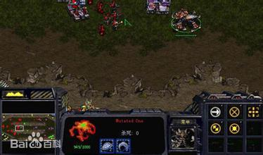
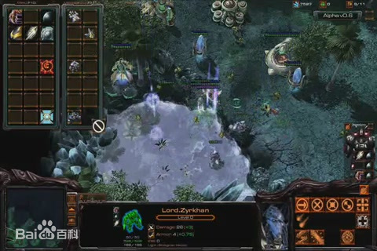
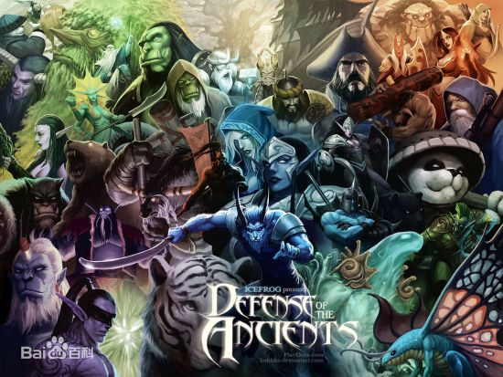
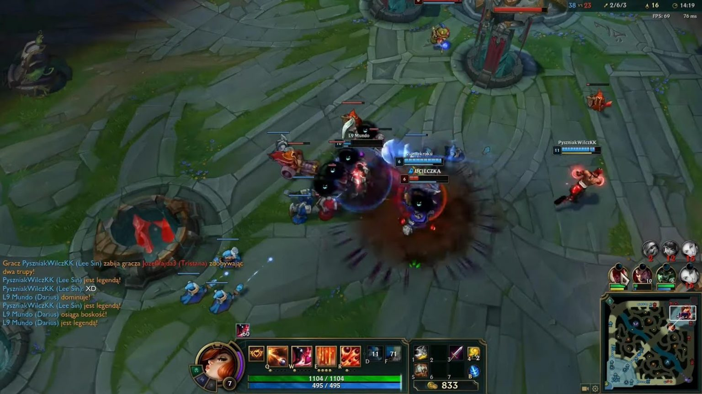
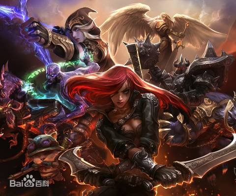
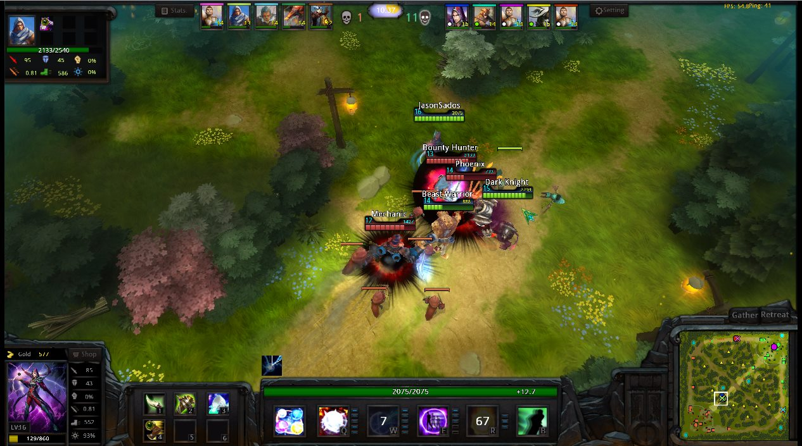

MOBA（英文全称：Multiplayer Online Battle Arena，缩写：MOBA，中文翻译：多人在线战术竞技游戏 [1] ），又被称为Action Real-Time Strategy（缩写：Action RTS，ARTS）动作即时战略游戏。 这类游戏的玩法是：在战斗中一般需要购买装备，玩家通常被分为两队，两队在分散的游戏地图中互相竞争，每个玩家都通过一个RTS风格的界面控制所选的角色。 但不同于《星际争霸》等传统的硬核的RTS游戏，这类游戏通常无需操作RTS游戏中常见的建筑群、资源、训练兵种等组织单位，玩家只控制自己所选的角色
1998年，《星际争霸》发行，暴雪娱乐公司第一次在暴雪娱乐制作并发行的游戏中绑定了地图编辑器。利用这款地图编辑器，当时有一位叫做Aeon64的玩家制作出一张名为Aeon Of Strife的自定义地图， 这就是所有MOBA游戏的雏形。在这个自定义地图中， 玩家们可以控制一个英雄单位与电脑控制的敌方团队进行作战，地图有3条兵线，并且连接双方主基地，获胜的目标就是摧毁对方主基地。值得一提的是，这款老地图现今依然在《星际争霸Ⅱ》中保持着更新。 这张星际争霸的自定义地图是DOTA的前身，也是所有moba的雏形，因此MOBA游戏的源头应该追寻至《星际争霸》时代的RPG地图。到英雄联盟的出现， 在刚开始英雄联盟自称为类DOTA游戏，但随后拳头游戏开始将游戏定义为MOBA游戏，随后MOBA游戏的叫法开始更加流行，但本质上是从类DOTA游戏进化过来的游戏类型，它囊括了比“类DOTA游戏”更多的内容 ，甚至连DOTA自身也开始被定义为MOBA了
在2002年，暴雪发布了另一款实时策略游戏《魔兽争霸Ⅲ》，和《星际争霸》一样，玩家也可以在这款游戏中创作自定义的地图。 在2003年，一名叫做Eul（现就职于Valve公司）的地图编辑者受到Aeon of Strife地图的启发而创作了叫做Defense of the Ancients的地图， 很快，其他的玩家们也可以创作自己版本的DotA了，每个创作者都可以自己增加英雄、物品和其他防御设施。新的RPG地图在新的土壤中得到了迅速的发展， 经过Eul、Guinsoo、Icefrog等作者们不懈的努力和更新的“Defense of the Ancients”（DOTA）最为成功，DOTA也从大体上奠定了后续MOBA游戏的基本框架， 之后所有的MOBA游戏都或多或少的借鉴过DOTA的设定。但实际上，由于DOTA百分之百的使用了《魔兽争霸》的模型和贴图，也就是说，DOTA并不是一款独立存在的游戏，而是一张地图。 DOTA在Ice frog（冰蛙）的带领下逐渐进入颠峰时期，成为当时国内外各大对战平台上人气颇高的对战地图；DOTA以及同时期出现的其他优秀作品对后世的MOBA游戏有着非常深远的影响
当时，其他人也注意到了DOTA地图的受欢迎度，很快，一款独立的游戏出现。第一个值得注意的就是在2009年发布的《半神》，作为第一款独立存在的MOBA游戏 ，这款游戏推出之时甚至还没有MOBA的说法，在当时，很多人把这款游戏叫做类DOTA。在很多方面，《半神》都与War 3地图很像，不过该游戏创作了自己的英雄单位。 不幸的是，该游戏在发布时遇到了服务器问题，很多人连不上线。 也正是由于这个问题，所以《半神》这款游戏没能够成为War3地图的有力竞争对手，该游戏也从来没有真正的大范围流行过。
在DOTA之后，还出现了许多优秀的类DOTA游戏，其中以美国Riot Games公司出品的《英雄联盟》最为著名，全新的平台、上手难度低等DOTA不具备的优势使得这款游戏迅速风靡全世界， 到2014年，《英雄联盟》创下同时在线750万人、月活跃玩家6700万人的记录，将MOBA游戏发展到了一个前所未有的高度； MOBA游戏也借此成为世界上受众最广的游戏类型；同时《英雄联盟》超高人气的赛事也极大的促进了电子竞技的发展。
在《DOTA2》和《英雄联盟》之类的MOBA获得巨大成功之后，游戏业迅速掀起了MOBA热，多款MOBA游戏应运而生， 比如2010年推出的第三人称射击类的Monday Night Combat也属于MOBA游戏，因为该游戏加入了野外生物、炮塔和兵线。 而2012年推出的《王牌英雄》（Awesomenauts）则把MOBA类扩展到了2D风格领域。 MOBA游戏依然是PC平台玩家最多，玩家投入游戏时间最多的内容。在2012年，华纳兄弟希望通过《中土守护者》（Guardians of Middle-earth）把MOBA类内容带向主机平台， 《无限危机》（Infinite Crisis）则试图采用DC漫画风格和新的世界观。而创作了War 3的暴雪也计划推出MOBA类的《风暴英雄》，甚至，MOBA类在手游平台也有出现 ，比如Zynga在2013年推出的《至日竞技场》。
如果要数尽MOBA游戏是不可能，因为还有很多的厂商在尝试做这类游戏。似乎每一个主流发行商都要推出一个自己的MOBA才好意思出来混。 我们还无法判断所有人对于MOBA类内容的热情可以持续多久，也很难说清楚这类游戏对于游戏业的影响到底能够达到什么程度，虽然最初诞生的时候并不起眼， 但的确已经成为所有开发商都不得不注意的领域。
MOBA游戏相比传统的RTS游戏更偏向于休闲娱乐，对玩家的操作要求均远远低于RTS游戏。再加上这类游戏中很多是免费游戏，因此吸引了一大批难以适应RTS游戏大规模高要求操作的玩家。 因为不再过高地要求玩家的操作水平，这个玩家群体比传统RTS游戏的硬核倾向的玩家群体要大得多。
MOBA一词在中国还存在一些争议。有一种观点认为，MOBA一词并不能很好地区分出英雄联盟等多人在线推塔游戏与使命召唤系列、战地系列等其他类型的多人在线游戏的区别 。也不能很好的区别与魔兽争霸系列、星际争霸系列等此类RTS（即时战略游戏）的区别，因此争议还在持续。 但其实这个游戏新名词在国际已经获得了一定程度的接受和使用。以英文维基百科的“Multiplayer online battle arena”词条为例，该词条诞生于2010年，已经有多种语言版本， 但中文版没有详细的介绍。该词条英文版本已经明确定义了MOBA游戏的类型和风格。
点击返回主页